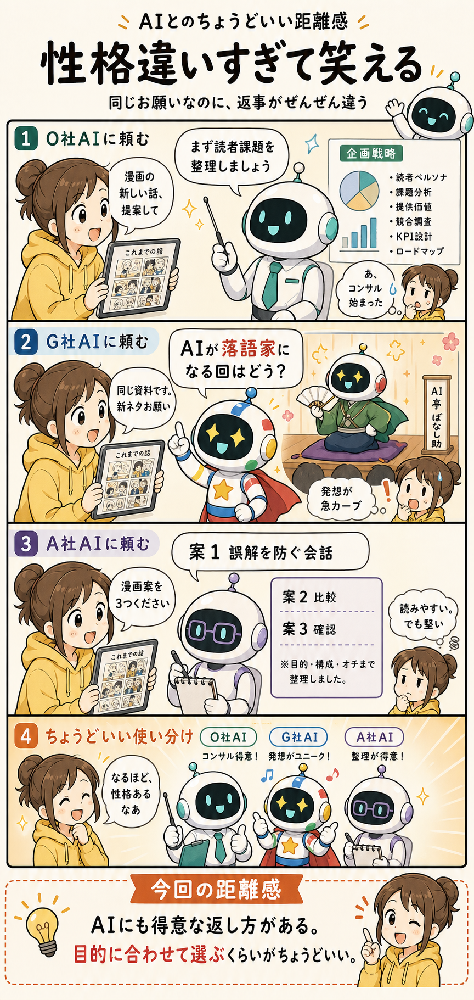

#014
性格違いすぎて笑える
同じお願いなのに、返ってくる方向がぜんぜん違う。

メモ
同じ資料を見せて、同じお願いをする。これなら、だいたい同じ答えが返ってくるはず。そう思っていた時期がありました。
たとえば「この漫画シリーズの新しい話を提案して」と頼むと、O社AIは急に読者課題、目的、KPI、ロードマップを整理し始める。いや、ありがたい。ありがたいけど、今ほしいのは漫画案です。
G社AIに同じことを頼むと、今度は発想がものすごく跳ねる。「AIが落語家になる回はどう？」みたいな、思いつかなかった方向から案が飛んでくる。面白い。面白いけど、どこに着地するのか少し心配。
A社AIは、ちゃんと漫画案を出してくれる。構成も読みやすいし、抜けも少ない。ただ、真面目すぎて少し笑いどころが薄い。会議資料としては助かるけれど、ぼやき漫画としてはもう一押しほしい。
へ〜と思うのは、AIはどれも同じ「便利な箱」ではなく、返し方のクセや得意な場面がけっこう違うというところ。相談の壁打ちが得意なもの、発想を広げるのが得意なもの、読みやすく整理するのが得意なものがある。
なので、「どれが一番すごいか」だけで選ぶより、今日やりたいことに合っているかで選ぶほうが扱いやすいです。企画を詰めたい日、変な案がほしい日、きれいに整理したい日。AIにも向き不向きがあるんですね。
今回の距離感
AIにも得意な返し方がある。目的に合わせて選ぶくらいがちょうどいいかもしれません。